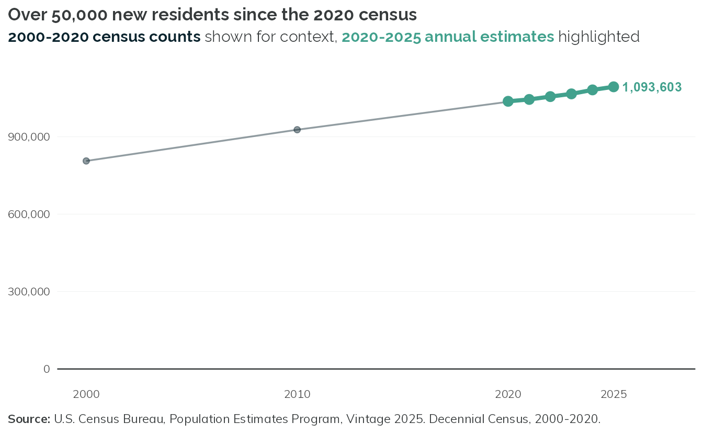
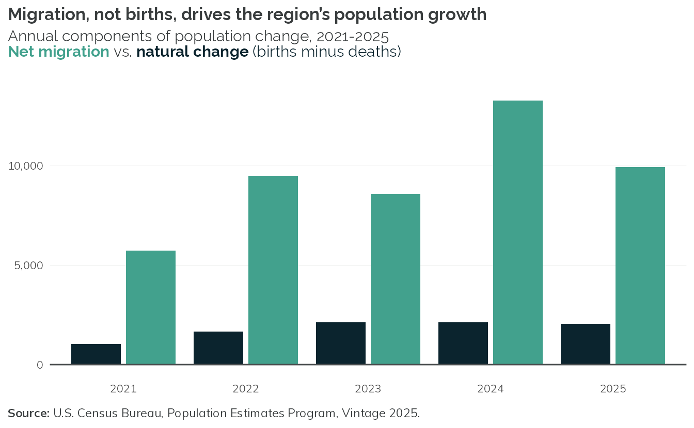
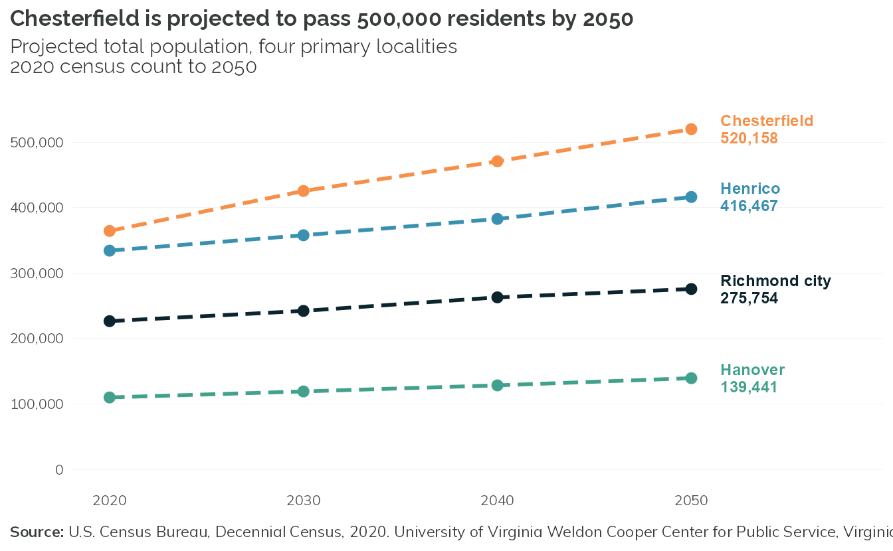
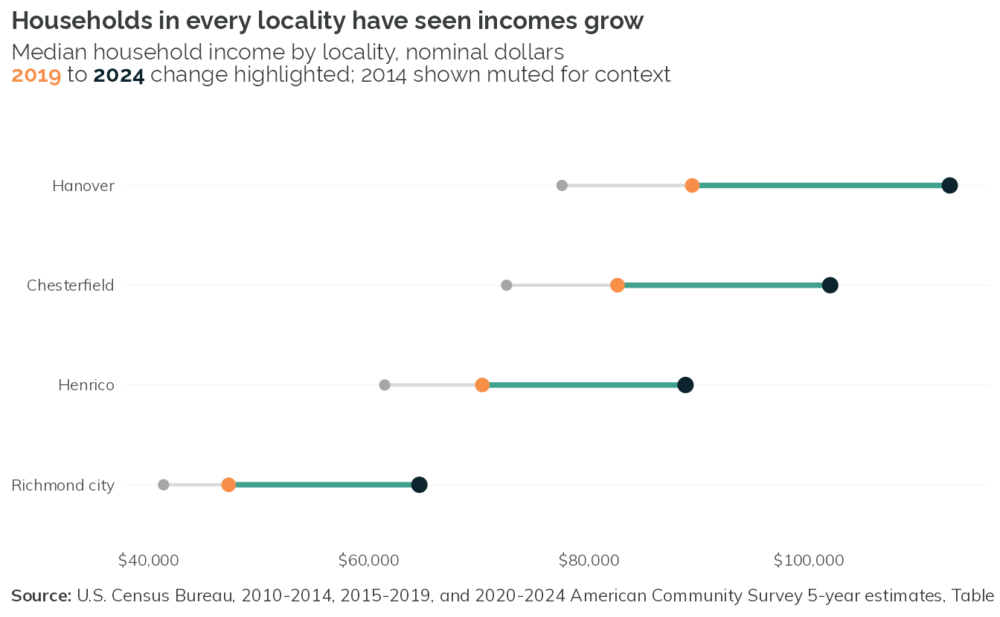

1 Housing demand
NoteSince 2022
The 2022 Data Update projected the primary region would reach 1,338,306 residents by 2050, growth of +29% from 2020. The Weldon Cooper Center’s updated 2025-release projections now put the 2050 total at 1,351,819 (30.5% growth), a 1.0% upward revision of the 2050 figure. The region’s growth outlook has strengthened, not softened, since the Framework was published.
1.1 The region’s population continues to grow
- The core region added about 58,000 residents between the 2020 census and the 2025 population estimate, growth of 5.6% in five years.
- Every year from 2020 to 2025 added population, with the largest single-year gains in 2024 and 2025.
1.2 Most growth still comes from people moving into region

- Net migration has delivered the large majority of the region’s growth every year since 2021, peaking at roughly 13,300 net movers in 2024.
- Natural change (births minus deaths) has stayed small — under about 2,100 residents per year regionwide — reflecting an aging population.
- Overall, the region’s demand pressure is primarily driven by households arriving from elsewhere, who need housing upon arrival.
- The 2020 estimate period covers only April-June 2020 and is omitted from the chart.
1.3 Every locality is projected to keep growing

- Chesterfield is projected to grow 43% by 2050, reaching about 520,000 residents — up from the 38% growth projected in the 2022 Framework.
- Henrico (+25%, to 416,000), Hanover (+27%, to 139,000), and Richmond city (+22%, to 276,000) all continue growing, with no primary locality projected to plateau.
1.5 Median household incomes continue to rise

- Every locality’s median household income rose at least 23 percent since 2019.
- Richmond city’s median rose 37 percent since 2019 — from $47,250 to $64,587 — yet it remains the lowest among the four primary localities.
- The slowest income growth among the four primary localities since 2019 was in Chesterfield (+23%).
- Going back to 2014, every primary locality’s median has risen at least 40% in nominal terms — a full decade of income growth that predates this recent acceleration.
- Each vintage is expressed in its own survey-year dollars, so these changes are nominal; part of the increase reflects inflation.
NoteData caveats
- Population estimates for 2020-2025 are Census Bureau Vintage 2025 figures and will be revised in future vintages. Weldon Cooper projections are the 2025 release, benchmarked to the 2020 census.
- ACS income medians are 5-year averages in each vintage’s own survey-year dollars. Comparisons across vintages are nominal, not inflation-adjusted.
- The 2022 Data Update baseline used 2016-2020 ACS and the prior Weldon Cooper release, so “Since 2022” comparisons reflect both real change and vintage revisions.